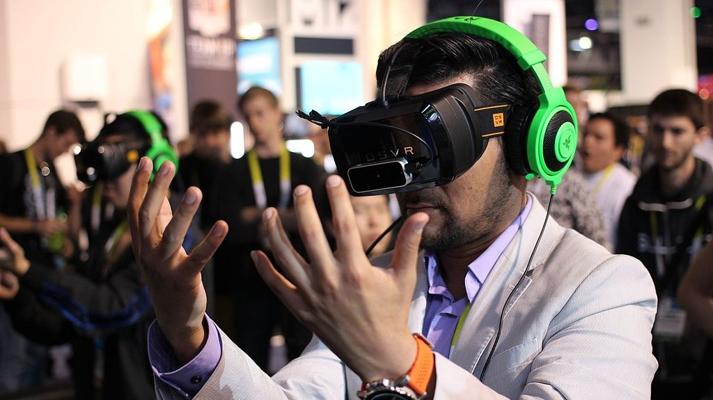
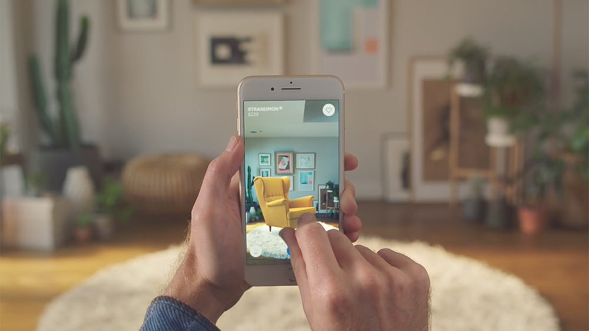
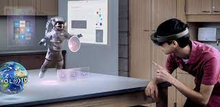

Diferencias entre realidad aumentada, realidad virtual y realidad mixta¶
Diferentes empresas de software y hardware están apostando por soluciones de realidad aumentada, realidad virtual o realidad mixta. Como el que se esté trabajando en tres tipos de realidades puede ser confuso, hoy te vamos a explicar las diferencias entre ellas para evitar que las confundas, ya que tienen bastantes similitudes entre ellas. A modo de resumen podríamos decir que la realidad virtual genera mundos totalmente inexistentes, la realidad aumentada combina elementos inexistentes con otros que sí están ahí, y la mixta es una mezcla entre ambas. Sin embargo, vamos a entrar más a fondo explicándote con detalle cómo funciona cada una de ellas.
¿Qué es la realidad virtual?¶
La real virtual o VR se diferencia del resto por ser en la que te sumerges por completo en un mundo virtual. Esto quiere decir que te permite simular una experiencia sensorial completa dentro de un ambiente artificial sin que veas nada de lo que hay en el exterior. Para "meterte dentro" de este mundo virtual sueles necesitar tanto unas gafas especiales como unos auriculares.
Estas gafas tienen que estar especialmente diseñadas para esta realidad, y tener una pantalla que se monte justo delante de tus ojos. Hay dos tipos de gafas, las que tienen su propia pantalla incorporada como las Oculus Rift o las que necesitan que incorpores un smartphone para hacer de pantalla, como por ejemplo las Gear VR de Samsung.
Este ecosistema mantendrá el enfoque que actualmente tiene Facebook con los creadores: ofrecerles servicios y herramientas al menor coste, en comparación con otras plataformas, como ha señalado el directivo. Se acompañará con nuevas formas de propiedad. La interacción con los objetos virtuales o la voz para controlar el entorno permitirán fundir el mundo físico con el digital. Y para ello la compañía ha anunciado nuevas herramientas (SDK) para que los desarrolladores puedan trabajar en sus experiencias de realidad mixta para el metaverso. La comunidad Spark AR cuenta ya con más de 600.000 creadores.
¿Qué es la realidad aumentada?¶
La realidad aumentada o AR se diferencia del resto por ser en la se complementa el entorno real con objetos digitales. Vamos, que ves todo lo que tienes a tu alrededor, pero el ordenador de el equipo que lleves frente a los ojos podrá reproducir sobre este entorno objetos, animaciones o datos que realmente no están ahí.

Esto permite, por ejemplo poder ver cómo quedaría un mueble en tu habitación, algo que ya están utilizando algunas empresas. Si te gustan los juegos, también te permite recorrer las calles de tu ciudad capturando con tu móvil unos Pokémon que realmente no están ahí.
Para crear este tipo de realidad medio real y medio digital pueden utilizarse gafas especialmente diseñadas para ello, cascos o las lentes de tu teléfono móvil. En el caso de las gafas piensa en las Google Glass, que tienen un cristal transparente para que veas lo que tienes a tu alrededor, pero pudiendo superponer información sobre cualquier objeto. Tanto en el caso de las gafas como el de los cascos por lo tanto hará falta que haya una CPU que gestione la realidad virtual que se imprime sobre la real. Esta puede estar incluida en el dispositivo, pero también podría ser suficiente con conectarse a un ordenador externo que se encargue del trabajo. En cualquier caso, el punto en común entre gafas o casco es que tendrán que tener unas lentes lo suficientemente transparentes para ver tu entorno a través de ellas.
¿Qué es la realidad mixta?¶
La realidad mixta o MR es una mezcla entre la realidad virtual y la aumentada. Es por lo tanto un entorno que mezcla los mejores aspectos de ambas, unificando la experiencia para que sólo necesites un único casco o gafas para poder utilizar una u otra.

Por un lado la realidad virtual te permite sumergirte en mundos completamente digitales, mientras que la aumentada te deja imprimir objetos digitales en entornos reales. Por lo tanto, lo que hace la realidad mixta es unir ambos conceptos para permitirte interactuar con objetos reales dentro de un mundo virtual, estar totalmente inmerso en un mundo completamente virtual, o reproducir elementos virtuales en tu entorno real.
Para utilizar la realidad aumentada necesitas unos cascos cerrados. Estos tendrán una cámara, de manera que en la pantalla que tengas sobre tus ojos podrás ver o tu entorno real a través de la cámara o un entorno totalmente virtual. Los cascos, como en los anteriores casos, podrán tener una CPU interna o tener que estar conectados a un ordenador externo. Aunque la realidad mixta ha sido casi la última en llegar, el empuje de empresas como Microsoft están apostándolo todo por ella y llevándola a Windows 10, lo que la democratizaría para que casi cualquiera pueda utilizarla.